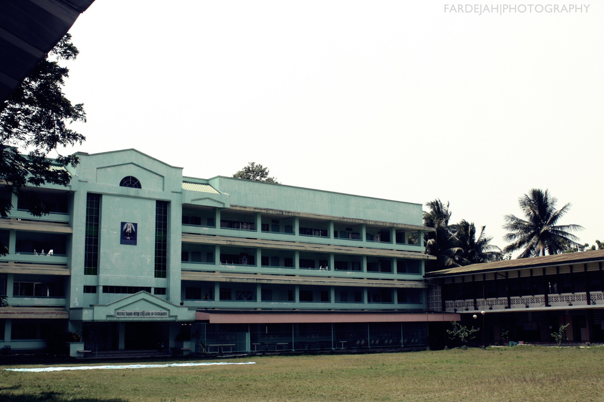

Welcome to the Notre Dame-RVM College of Cotabato
Notre Dame-RVM College of Cotabato is an institution accredited by TESDA that offers Technical and Vocational Education and Vocational Education and Training Programs (TVET) under the Technical Educationand Skills Development Authority (TESDA) and the Commission on Higher Education (CHED).It is a private school run by the Religious of the Vigin Mary.